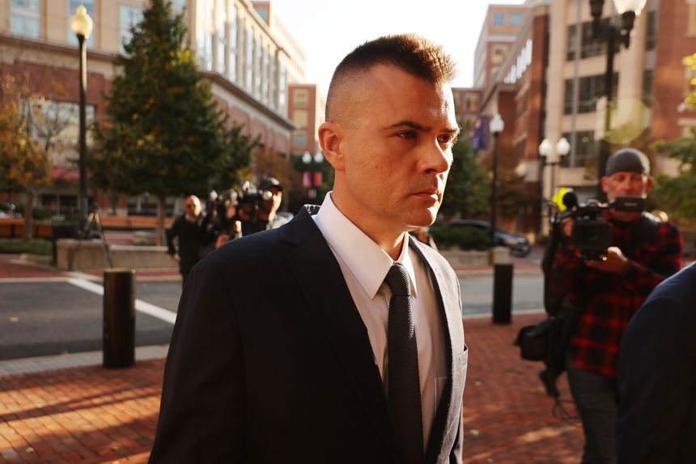
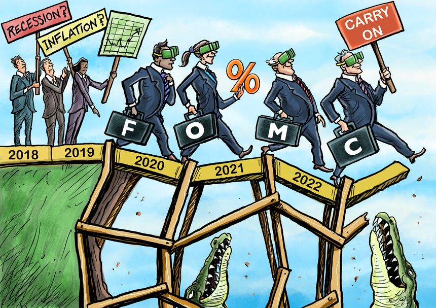
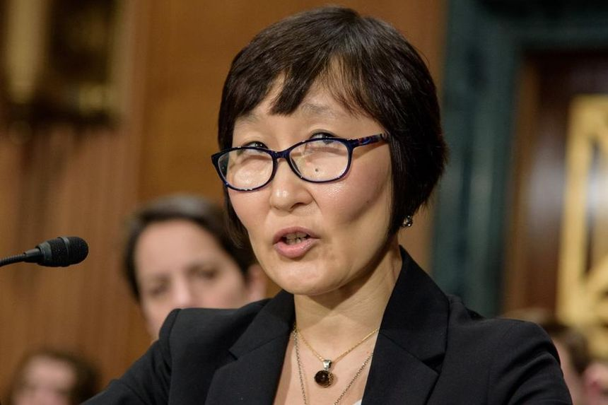

| 时间 | 分类 | 标题 | 副标题 | 正文 | 图片 |
|---|---|---|---|---|---|
| 2021-11-16 22:05:00 | Business | Rogers to Replace CEO Joe Natale After Board Fight | Former finance chief Tony Staffieri will take over on interim basis | TORONTO—Rogers Communications Inc. said Chief Executive Joe Natale had left and was being replaced on an interim basis by former finance chief Tony Staffieri. The company said it has begun searching for a permanent CEO and that Mr. Staffieri, who was fired in September, is a candidate. News of the management change was earlier reported by the Toronto Star. |
|
| 2021-11-16 19:29:00 | Risk & Compliance Journal | Son of Former Panama President Plans to Plead Guilty in Odebrecht Bribery Case | Luis Martinelli is one of two sons of Panama’s former president who have been charged with participating in a conspiracy to launder as much as $28 million in bribes | ||
| 2021-11-16 19:15:00 | Risk & Compliance Journal | U.S. to Sell $56 Million in Cryptocurrency Seized in BitConnect Fraud Scheme | Seizure is largest single recovery from a cryptocurrency fraud in the U.S., Justice Department says | ||
| 2021-11-16 19:06:00 | U.S. | When Will the Kyle Rittenhouse Verdict Be Announced? | The jury is currently deliberating on the case in Kenosha, Wis., to decide what happens to the teenager who killed two men | Kyle Rittenhouse, now 18 years old, faces charges of intentional, reckless and attempted homicide, and reckless endangerment. The case concerns the night of Aug. 25, 2020: Mr. Rittenhouse shot and killed two men and wounded another as he patrolled the city with a rifle and a small medical kit amid unrest after the police shooting of Jacob Blake. Judge Bruce Schroeder dismissed the misdemeanor charge of possession of a dangerous weapon by a person under 17 years old. The defense had argued a person of that age could carry such a weapon under Wisconsin law as long as it wasn’t a short-barreled rifle. After the prosecution conceded that the AR-15-style rifle didn’t have a short barrel, Judge Schroeder dropped the charge. The judge also agreed to allow prosecutors to offer jurors a number of less serious charges to consider if they can’t agree on the more serious charges. |
|
| 2021-11-16 19:01:00 | Opinion | Ganging Up on Moderna | The left and the feds want to take undeserved credit for the company’s Covid vaccine patent. | Barack Obama captured the view of modern progressives with his famous line about successful businesses: “You didn’t build that.” Now Democrats are claiming that Moderna didn’t invent its enormously successful Covid vaccine—the National Institutes of Health (NIH) did. Several media outlets reported last week that Moderna is refusing to give NIH researchers credit for patents that were supposedly key to its Covid vaccine. The charge is that Moderna is profiting from government innovation. This misinformation is being used to promote the narrative that drug makers owe their success to the government. |
|
| 2021-11-16 18:57:00 | Opinion | Politics and Union Corruption in Philadelphia | Two convictions expose the underside of the city’s power brokers. | Unions and politicians enjoy a symbiotic relationship in America’s big cities. And in Philadelphia on Monday a jury found that a powerful labor boss and city councilman crossed over into public corruption. John Dougherty, known as Johnny Doc, has long run the powerful International Brotherhood of Electrical Workers Local 98, and in recent years he also headed Philadelphia’s Building and Construction Trades Council. Prosecutors found that he kept City Councilman Bobby Henon on the Local 98 payroll for a no-show job and paid him health and pension benefits. In exchange Mr. Henon did Johnny Doc’s bidding, political or personal. |
|
| 2021-11-16 18:55:00 | Opinion | A Housing Gift for Beverly Hills | Just what the economy doesn’t need: subsidies for $1 million mortgages. | Home prices are soaring thanks to inflation and other government policies, so what to do? The Biden Administration’s answer is apparently to make homes more affordable for the paupers in Nantucket and Palo Alto by guaranteeing mortgages up to $1 million. The Journal reported Tuesday that government-sponsored enterprises Fannie Mae and Freddie Mac are expected to raise their conforming loan limits to about $650,000 from $548,250 and nearly $1 million in “high-cost” markets from $822,375. That’s to keep pace with the inflation in housing prices, which were up 23% in the second quarter year-over-year. |
|
| 2021-11-16 18:53:00 | Opinion | Vladimir Putin’s Space Front | A surprise antisatellite test underscores a growing military threat. | Vladimir Putin is on a roll. Moscow is massing troops along Ukraine’s borders while Russian ally Belarus launches a refugee attack on NATO’s eastern flank. Now the emboldened Russian leader has opened a new front with a provocation in space. On Monday Russia destroyed a defunct Soviet satellite with an antisatellite missile, the BidenAdministrationsaid. The test “generated more than 1,500 pieces of trackable orbital debris and will likely generate hundreds of thousands of pieces of smaller orbital debris,” according to U.S. Space Command. American, German and Russian astronauts at the International Space Station had to take evasive action to avoid the debris field. |
|
| 2021-11-16 18:45:00 | Opinion | The Other Danchenko Dossier? | In both the Trump and Hillary Clinton cases, fake ‘intelligence’ drove the FBI. | I gather numerous readers wanted more details about the secret Russian intelligence that influenced FBI Director James Comey’s interventions in the Hillary Clinton email case during the 2016 presidential election. I referred to this matter at length in Saturday’s column, without rehearsing the information, limited as it is, that became available in media reports almost five years ago. If you remember anything from a flurry of press leaks in May 2017, a Russian document landed in Mr. Comey’s hands early in the 2016 race. It cited an alleged email exchange between Rep. Debbie Wasserman Schultz, then head of the Democratic National Committee, and a George Soros-employed activist named Leonard Benardo. |
 |
| 2021-11-16 18:44:00 | Opinion | If 2021 Elections Are Any Guide, 2022 Will Be a Doozy | Students discuss Republican victories in the New Jersey and Virginia elections. | Editor’s note: In this Future View, students discuss next year’s midterm elections. Next week we’ll ask, “What does the Kyle Rittenhouse trial tell us about America’s culture and criminal-justice system?” Students should click here to submit opinions of fewer than 250 words before Nov. 23. The best responses will be published that night. |
|
| 2021-11-16 18:38:00 | U.S. | Challenges to Biden Vaccine Rules Will Come Before Ohio-Based U.S. Appeals Court | Conservative-leaning Sixth Circuit is designated as referee for cases related to vaccine-and-testing rules for private employers | WASHINGTON—A conservative-leaning U.S. appeals court in Cincinnati was randomly selected Tuesday to decide challenges to the Biden administration’s new rules requiring many employers to ensure their workers are vaccinated or tested weekly for Covid-19. Legal challengers have petitioned federal appeals courts around the country to review the rules, formally issued earlier this month by the Occupational Safety and Health Administration. The requirements, which apply to businesses with 100 or more employees and cover roughly 84 million workers, are scheduled to take effect Jan. 4. |
|
| 2021-11-16 18:32:00 | Tech | Qualcomm Shares Rise to Record High on Ambitious Growth Targets | Chip company receives boost as CEO details ambitions beyond smartphones | The push by Qualcomm Inc.’s new chief executive to diversify into everything from cars to connected devices now comes with ambitious targets that are boosting investor sentiment for the company best known for providing cellphone chips. Qualcomm shares climbed to a record close Tuesday after Chief Executive Cristiano Amon said the company’s roughly $1 billion automotive business would reach $10 billion in 10 years and that its sales linked to connected devices, the so-called Internet of Things, could advance more than 75% through 2024 and reach $9 billion. |
|
| 2021-11-16 18:23:00 | Opinion | Border Crisis Has Biden’s Presidency on the Edge | Voters are more anxious about illegal immigration, but Democrats seem oblivious to the problem. | It’s hard to know the extent to which President Biden’s job-approval tribulations can be linked to the continuing chaos at the southern border. But we know that illegal immigration has become a top concern of voters, and the amnesty provisions that Democrats want included in their Build Back Better reconciliation bill are unlikely to help matters. Anxiety about illegal immigration typically increases during economic downturns, when foreign workers get blamed for unemployment. That’s obviously not the situation today. The economy is not in recession, and the number of available jobs far exceeds the number of people looking for work, even as employers have increased pay and offered signing bonuses to attract new employees. The current concern about illegal immigration has less to do with the labor market and more to do with the hundreds of thousands of people entering the country illegally while Biden administration officials play down the crisis or sit on their hands. |
|
| 2021-11-16 18:23:00 | Opinion | The Federal Reserve Needs to Remove Its Blinkers | A monetary mistake based on an outdated paradigm could trigger a recession or even worse inflation. | The Federal Reserve’s latest policy statement reveals a dogged determination to accommodate despite increasing evidence of economic recovery, strong demand for labor and rising inflation. Chairman Jerome Powell seems eager to urge patience on raising interest rates for the sake of increasing labor participation. This approach reflects lessons learned about economic growth during the Trump administration, but changed conditions render it inappropriate for the current moment. It isn’t that the framework is faulty. To the contrary, it incorporates the realization that low unemployment combined with productivity gains isn’t inflationary because it results in increased output. This contradicts the Phillips-curve notion that low unemployment leads to high inflation—which central banks must then counter by raising interest rates. |
 |
| 2021-11-16 18:22:00 | Opinion | Biden Policy Disrespects Both Science and Religion | The administration seeks to force our Christian college to let men live in women’s dormitories. | Point Lookout, Mo. College of the Ozarks faces an existential threat, as a federal court will hear on Wednesday. The Biden administration has declared that we must start letting men into our young women’s dorm rooms, showers and locker rooms—or else face the wrath of the federal government. |
|
| 2021-11-16 18:21:00 | Books & Arts | ‘Ends of War’ Review: The Myth of Appomattox | The final days and weeks of war, and the large-scale evacuations that invariably follow, are seldom, if ever, orderly. | When Robert E. Lee surrendered his battered Confederate army to Ulysses S. Grant at Virginia’s Appomattox Court House on Palm Sunday, April 9, 1865, the flames fanning the Civil War were extinguished—so the story goes—as abruptly as if turned off by a switch. Offered generous terms to abandon their rebellion, Lee’s soldiers supposedly stacked rifles meekly and returned to civilian life, never again to take up arms against their country. But as America’s sloppy withdrawal from Afghanistan recently reminded us, the final days and weeks of war, and the large-scale evacuations that invariably follow, are seldom, if ever, orderly. There were always problems with the rosy myths about Appomattox and its aftermath, not least among them the fact that ex-Confederates soon undertook a second civil war, against Reconstruction in general and African-Americans in particular. |
|
| 2021-11-16 18:21:00 | Opinion | The Hunt for Red October at the Breakfast Table | My daughters ambushed me, so I tried an evasive maneuver inspired by my favorite movie. | Submarine movies are always suspenseful, none more so than the 1990 thriller “The Hunt for Red October.” Entertaining as it is, I never thought the film would be a source of sound child-rearing advice. A few years ago, my daughters Molly and Hope ambushed their mother, Devin, and me over our Saturday morning coffee. They were both still in high school and charged us with favoring their older brother, Joe, who’d just left for college. |
|
| 2021-11-16 18:21:00 | Business | The Elizabeth Holmes Trial: Biotech Investor Describes Efforts to Vet Theranos | Brian Grossman’s firm, PFM Health Sciences, ended up being one of the blood-testing startup’s biggest backers | SAN JOSE, Calif.—Investor Brian Grossman took the stand Tuesday in the criminal fraud trial of Elizabeth Holmes to tell jurors about his firm’s biotechnology expertise and the due diligence it undertook before investing $96 million in Theranos Inc., a contrast to other investors who said they took Ms. Holmes’s promises about the startup’s technology at face value. Mr. Grossman recounted how he and others from his San Francisco-based hedge fund, PFM Health Sciences LP, drove to meet Ms. Holmes for the first time at Theranos headquarters in Palo Alto in December 2013. He testified that he was impressed by what they heard that day, including that Theranos’s blood-testing devices were being actively used by the military, that the company could run any major blood test on its devices and that it had partnerships with major pharmaceutical companies. |
|
| 2021-11-16 18:13:00 | Politics | Senate Confirms Jonathan Kanter as Justice Department Antitrust Chief | Nominee, receiving bipartisan support, joins a department that already has been active in filing lawsuits | WASHINGTON—The Senate confirmed Jonathan Kanter on Tuesday as the Justice Department’s top antitrust official, adding a pro-enforcement lawyer to a Biden-administration team that has already been aggressive in addressing what it sees as threats to competition. Mr. Kanter, 48, was confirmed on a bipartisan 68-29 vote, as Democrats and some Republicans believe antitrust enforcers should be doing more to protect competition in the marketplace, including in technology sector, agriculture and healthcare. |
|
| 2021-11-16 18:05:00 | Economy | Biden Says Fed Chair Pick Could Be Unveiled This Week | The president has interviewed Jerome Powell and Lael Brainard | President Biden hinted to reporters Tuesday he could reveal his choice for Federal Reserve chief around the end of the week. Mr. Biden is considering whether to reappoint Fed Chairman Jerome Powell when his four-year term expires in February or to pick someone else. He interviewed Mr. Powell and Fed governor Lael Brainard for the position earlier this month. |
|
| 2021-11-16 18:04:00 | Politics | Federal Government Could Be Unable to Pay Bills as Soon as Dec. 15, Yellen Says | In letter to Congress, Treasury secretary urges lawmakers to act to raise or suspend borrowing limit | The U.S. government could run out of resources to meet the nation’s obligations as soon as Dec. 15, Treasury Secretary Janet Yellen said Tuesday, renewing questions about how Democrats and Republicans in Congress will resolve a standoff about raising or suspending the federal borrowing limit. Ms. Yellen provided the fresh estimate of when the federal government might no longer be able to pay all of its bills in a letter to Capitol Hill leaders. She had previously said that a debt-limit increase passed by Congress in October provided confidence that the federal government would be able to pay its bills at least through Dec. 3. |
|
| 2021-11-16 17:40:00 | Tech | Activision Blizzard Employees Demand CEO Bobby Kotick’s Resignation | Protest occurs after a report on the executive’s handling of sexual misconduct issues at the videogame company | More than 100 current and former Activision Blizzard Inc. employees participated in a protest Tuesday to demand the resignation of Chief Executive Bobby Kotick after publication of a Wall Street Journal article about his handling of sexual misconduct issues at the videogame company, participants said. The demonstration was held outside Activision’s Blizzard campus in Irvine, Calif., and organized by a recently formed Activision employee group called the ABK Workers Alliance. ABK is shorthand for Activision Publishing, Blizzard Entertainment and King, the company’s three main business units responsible for its Call of Duty, World of Warcraft and Candy Crush franchises, respectively. |
|
| 2021-11-16 17:29:00 | Business | Executive Pleads Guilty in Internet Address Fraud Case | Amir Golestan was accused of using his web-services company Micfo to win scarce IP addresses by fraudulent means | WASHINGTON—A technology executive pleaded guilty to federal wire-fraud charges on Tuesday, closing an obscure but potentially influential case that could shape future criminal prosecutions involving companies that provide bedrock internet services to customers. Amir Golestan entered a plea on behalf of himself and his company, Micfo, at the end of the second day of a trial in federal court in Charleston, S.C., according to court records. He was accused of using fraudulent means to obtain thousands of internet protocol, or IP, addresses from the American Registry for Internet Numbers, a small Virginia-based nonprofit that allocates the addresses that computers use to communicate online. |
|
| 2021-11-16 17:04:00 | Books & Arts | Extreme Makeover at the Y | The recently opened YMCA in the Bronx is a welcoming, modern achievement that, in both style and substance, points to the future of a historic organization. | The Bronx, N.Y. What building type is more conservative than the traditional YMCA? More than a thousand were built before World War I, providing young men with cheap lodging in a healthy moral environment. They were “Manhood Factories”—so Paula Lupkin’s study of the classic YMCA calls them—three- or four-story brick boxes, not quite hotels and not quite clubhouses, but somewhere in between. |
 |
| 2021-11-16 17:01:00 | Books & Arts | ‘Dean Martin: King of Cool’ Review: Grasping an Elusive, Sophisticated Icon | Tom Donahue’s documentary looks at the enigmatic entertainer and the mercurial nature of what ‘cool’ means. | People of a certain age—boomers and their elders, specifically—probably never imagined a time when they would have to explain Dean Martin. He seemed to be everywhere. He had an enormously successful run with a TV variety show, as well as hit records, club dates and movies. Just as important, he was a kind of one-man brand: the singer who wasn’t quite Sinatra, the host who wasn’t quite Carson, the actor who didn’t pretend to be Brando but who was so effortlessly charming he could make even his muffed lines into comedy material. As its title implies, director Tom Donahue’s “Dean Martin: King of Cool” (with no apologies to Miles Davis) is out to define not just Martin but the quality of “cool” itself, at least in its postwar, Eisenhower-to-Kennedy-era sense. That the actor Jon Hamm is among those interviewed by Mr. Donahue is fitting; “Mad Men” helped make ’60s cool cool once more. Observers ranging from rapper/entrepreneur RZA to the cultural critic and academic Gerald Early weigh in on Martin’s contributions to, among other things, civil rights, however tangential they might have been: Martin was a member of the vaunted Rat Pack, as was Sammy Davis Jr., even though Davis couldn’t eat in certain Las Vegas hotels where he and his singing, dancing, joke-cracking white cronies performed. Martin was a Midwesterner, born in Steubenville, Ohio, in 1917 as Dino Crocetti, a second-generation Italian-American who didn’t speak English until he went to school. He didn’t make sense as the smoothest guy in show biz. “King of Cool” suggests he knew that all too well. |
|
| 2021-11-16 16:57:00 | Books & Arts | ‘The Mighty Underdogs’ Review: Playing With the Big Dogs | Young people are put through their paces as they train to be dog handlers, eying a coveted spot at the Westminster Dog Show. | ‘The Mighty Underdogs” might make one think, however fleetingly, of a junior edition “Best in Show,” Christopher Guest’s wonderfully snarky 2000 comedy about dog shows, dogs and dog-show people. But the Discovery series is more akin to “Spellbound,” the 2002 film about the national spelling bee that spawned an entire school of documentaries, ones in which a director will focus on a specialized pursuit, the charming children and less-charming parents involved, and rolls the dice about which subjects will win both hearts and the game. Like “Spellbound” and its kin—which includes every kid version of a competitive reality show—“The Mighty Underdogs” is much more about the people than the contest, or even the dogs, which are upstanding, hardworking and would seem to have fewer issues than the young people learning to handle them. It’s a fiercely competitive arena—thousands of kids try to win the requisite number of qualifying competitions to reach the Westminster Dog Show, but only a fraction do. Their motivations for competing may vary (“My therapist suggested it,” says one) but they’re generally likeable, with stories to tell and much to learn. Which they do. So do we. |
|
| 2021-11-16 16:53:00 | Business | Nike Delays Launch of Travis Scott Sneaker After Astroworld Festival Deaths | Houston Police Department is investigating the rapper’s concert, where a crowd surge this month killed 10 and injured dozens | Nike Inc. said it is postponing the launch of its sneaker collaboration with Travis Scott after 10 people died and dozens were injured at the rapper’s Astroworld Festival in Houston earlier this month. “Out of respect for everyone impacted by the tragic events at the Astroworld Festival, we are postponing the launch of the Air Max 1 x Cactus Jack,” Nike said in a statement on its website. |
|
| 2021-11-16 16:36:00 | World | Biden, Xi Open to Nuclear-Arms Talks, White House Says | A dialogue, if it happens, would be one of the few concrete outcomes from president’s meeting with Chinese leader | President Biden and President Xi Jinping of China have agreed to explore talks on arms control, a top White House official said, a day after the two used a virtual meeting to emphasize the need to avoid conflict on regional security and economic matters. “The two leaders agreed that we would look to begin to carry forward discussions on strategic stability,” White House national security adviser Jake Sullivan said Tuesday. |
|
| 2021-11-16 16:32:00 | Media & Marketing | Miramax Sues Quentin Tarantino Over ‘Pulp Fiction’ NFT Plans | Production company says director is seeking to ‘capitalize unilaterally’ on Miramax’s rights to cult movie | ||
| 2021-11-16 15:59:00 | Politics | Biden Hits Road to Promote Infrastructure Law as Democrats Debate Spending Plans | Congressional Democrats are ready to formally debate the separate, roughly $2 trillion healthcare, education and climate bill this week | WOODSTOCK, N. H.—President Biden visited an aging New Hampshire bridge to begin a new phase of the sales pitch for the bipartisan infrastructure law, as Democrats debate the heathcare, education and climate-change plan that represents another central piece of his agenda. Following a White House bill-signing event Monday attended by Democrats and Republicans, Mr. Biden traveled Tuesday to Woodstock, N.H., to the NH 175 bridge over the Pemigewasset River. The White House said the span was rated as structurally deficient and has been on the state’s red list of bridges in poor condition since 2013. |
|
| 2021-11-16 15:58:00 | U.S. | FBI Tracks Threats Against Teachers, School-Board Members | Many Republicans see prospect of criminalizing concerned parents | WASHINGTON—The Federal Bureau of Investigation has set up a process to track threats against school-board members and teachers, moving to implement a Justice Department directive that some law-enforcement officials and Republican lawmakers say could improperly target parents protesting local education policies. The heads of the FBI’s criminal and counterterrorism divisions instructed agents in an Oct. 20 memo to flag all assessments and investigations into potentially criminal threats, harassment and intimidation of educators with a “threat tag,” which the officials said would allow them to evaluate the scope of the problem. |
|
| 2021-11-16 15:58:00 | U.S. | Andrew Cuomo Faces Possible Sanctions Over Book Deal | New York ethics watchdog revokes its approval of memoir by former governor | ALBANY, N.Y.—New York’s ethics watchdog revoked its approval of former Gov. Andrew Cuomo’s pandemic memoir on Tuesday, a move that paves the way for sanctions over the $5.1 million publishing contract he signed last year. Mr. Cuomo published “American Crisis: Leadership Lessons From the Covid-19 Pandemic” in October 2020 after his management of the early days of the outbreak in New York made him a national figure. |
|
| 2021-11-16 15:54:00 | CFO Journal | Poshmark Hires Amazon Executive as CFO | The move is the latest instance of an alumnus of the e-commerce giant helming another company’s finance function | ||
| 2021-11-16 15:51:00 | Opinion | A Buffalo Saber to the Socialist Heart | Leftists discover their ideas aren’t popular. | A mayoral election in America’s 76th-largest city usually doesn’t exert much influence on national politics. “As Buffalo goes, so goes the country” is not something you hear every day from Larry Sabato or Norm Ornstein. But the recent repudiation of socialism by voters in a city that hasn’t elected a Republican mayor since the 1960s could have a far-ranging and beneficial impact. In the immediate aftermath of this month’s crushing defeat for a radical Democratic nominee at the hands of a write-in candidate, many leftists decided to view the event as a political betrayal by moderate Democrats, or perhaps a dirty trick. A recent Journal editorial noted: |
|
| 2021-11-16 15:42:00 | Business | Pfizer Submits Covid-19 Pill for FDA Authorization | Testing found pill 89% effective at reducing risk of hospitalization and death from Covid-19 when taken soon after diagnosis | Pfizer Inc. said it asked U.S. health regulators to authorize its oral Covid-19 drug for use in high-risk patients, putting the pill on a path that could make it available for people to take at home by the end of the year. Clearance from the U.S. Food and Drug Administration would give patients and doctors an easy-to-use treatment to keep people out of the hospital early in the course of the disease. |
|
| 2021-11-16 15:16:00 | Opinion | ‘National Conservatism’ Is Having an Identity Crisis | I’ll take my conservatism without modification, writes Matthew Continetti. | Christopher DeMuth’s “Why America Needs National Conservatism” (op-ed, Nov. 13) was so fascinating I read it twice—and the second time I conducted an experiment. I removed the adjective “national” whenever it modified “conservatism” and found that it didn’t make much of a difference to his case. Mr. DeMuth lists the accomplishments of the conservative movement in economics, social policy and jurisprudence, and explains that the current moment demands institutional reform in the spirit of both Edmund Burke and Adam Smith. As he points out, an earlier generation of conservatives made exactly this point. They did so without abandoning the classical liberal principles of limited government, equality under the law, religious pluralism and individual rights. |
|
| 2021-11-16 15:15:00 | Opinion | The EU Learns the Virtues of Border Control | On Russia, energy and migration, Germany has cause to regret its errors. | It is gratifying that the European Union did not see Poland’s blocking of the refugee offensive on its borders as another example of the nation’s alleged slide into authoritarianism (“Putin’s Belarus Offensive,” Review & Outlook, Nov. 12). Perhaps Angela Merkel’s lingering pain from her error, in allowing uncontrolled refugee movement into Germany, has convinced her successors that a nation’s control of its borders is necessary, after all. Perhaps also the EU’s decision to finance Poland and other Baltic states in building physical barriers to confront Vladimir Putin’s stereogram was influenced by a lesson from across the pond. Perhaps the threat of “shutting off natural gas” from Mr. Putin’s puppet in Belarus should be seen by the Germans as an indication of coming attractions when the Nord Stream 2 pipeline takes hold. |
|
| 2021-11-16 15:14:00 | Opinion | Russia Never Ran Out of ‘Useful Idiots’ in America | John Durham may get more than he bargained for in investigating the FBI. | Holman Jenkins’s “Durham Sails Into Deep Waters” (Business World, Nov. 13) raises the question of whether the special counsel’s itinerary includes stops at ports of call previously managed by senior leadership at the Western world’s premiere investigatory agency. The three indictments filed by John Durham’s office place the FBI in the position of the “victim” of false statements made by a Clinton campaign lawyer and a Russian national with Kremlin ties serving as the “primary sub-source” for Christopher Steele’s Russian dossier, and by a partisan FBI counsel willing to alter an email about Carter Page to facilitate issuance of a FISA warrant. Unquestionably, the making of false statements or the submission of tampered documents would render the perpetrators culpable. But the question remains whether senior officials at federal law-enforcement agencies, after having investigated the matter and discovered their falsity, nonetheless portrayed them as “verified” in seeking surveillance orders. |
|
| 2021-11-16 15:08:00 | Markets | Qualcomm Sells an Almost Apple-Free Future | Chipmaker sets better-than-expected growth targets even as it expects iPhone contribution to wane | ||
| 2021-11-16 15:00:00 | Business | Netflix Changes How It Ranks Its Most Popular Shows | Streaming service will release weekly top 10 of shows by total hours viewed, dropping much-criticized two-minute metric | ||
| 2021-11-16 14:50:00 | Deals | Boston Red Sox Owner Fenway Sports in Talks to Buy Pittsburgh Penguins | Deal for the NHL franchise could be finalized later this week | Fenway Sports Group LLC, the holding company that owns the Boston Red Sox, is in advanced talks to buy the Pittsburgh Penguins hockey team, according to people familiar with the matter. A deal could be finalized later this week, assuming the talks don’t fall apart, the people said. Terms being discussed couldn’t be learned. |
|
| 2021-11-16 14:41:00 | Business | Netflix’s ‘Tiger King 2’ Premiere Won’t Be Disrupted by Carole Baskin’s Legal Battle | A Florida judge isn’t expected to rule on the show before its scheduled release on Wednesday | ||
| 2021-11-16 14:38:00 | Life & Work | A Holiday Gift Guide for Fashion Lovers: 13 Ideas Under $300 (and One Splurge) | From a flower-powered kids’ sweatsuit to cozy, quilted mittens to a shockingly shiny handbag, these fashion and beauty gifts will spread joy in style | 2021 WAS supposed to usher happiness, even hedonism, back into our lives and, while it didn’t quite deliver, things are definitely looking up. This December, unlike last, many Americans are able to reunite with family and friends. And after months spent in schlubby sweats, why not give your favorite people the gift of style? In creating this gift guide, our fashion editors focused on joyful clothes, accessories and beauty indulgences that promise to dispel some of the uneasiness and worry we’ve all lived through—from a sturdy patchwork shirt with personality to a shimmering sequin handbag that will light the path to the new year. They’re all designed to help your loved ones reconnect with that endangered idea: fun. Equip that ambitiously stylish guy you know with more than a bland button-up. We submit instead this handsome (and hard-wearing) patchworked shirt from New York label 3sixteen. Made in India from a hand-loomed cotton “khadi” fabric, its design combines panels in four different earth tones that conjure an arid “Dune”-like landscape. Should your recipient snag a seam (or just crave extra idiosyncrasy), he can always add his own patches atop this crafty hodgepodge. Patchwork BD Shirt, $240, 3sixteen.com |
|
| 2021-11-16 14:28:00 | Business | Striking Deere Workers to Vote Wednesday on New Contract Offer | Deal under review would raise pay for improved output and leave other wage proposals unchanged | Striking workers at Deere & Co. are scheduled to vote Wednesday on a third contract offer from the company that boosts incentive pay for increasing factory output. The farm- and construction-equipment maker’s latest offer to more than 10,000 members of the United Auto Workers union would raise the base productivity pay about 4%, based on a summary of the offer provided to workers. The general wage increases, bonuses and improvements in pension funding in the offer are unchanged from a prior proposal that workers rejected earlier this month, workers said. |
|
| 2021-11-16 14:27:00 | Business | Puff Bar E-Cigarette Maker Under Investigation by North Carolina Attorney General | Company behind the most popular e-cigarette among teens has sidestepped FDA jurisdiction by reformulating products with synthetic nicotine | North Carolina’s attorney general is launching an investigation into Puff Bar, placing new scrutiny on the e-cigarette that has unseated Juul as the most popular vaping brand among children and teens. The probe is part of the state’s broader inquiry into the e-cigarette industry, including manufacturers, distributors and retailers who sell near North Carolina schools, said North Carolina Attorney General Josh Stein. |
|
| 2021-11-16 14:02:00 | U.S. | Vanessa Bryant Must Provide Therapy Records in Lawsuit Over Kobe Bryant Crash-Site Photos | Widow of NBA star has said allegedly shared photos caused emotional distress | Vanessa Bryant will have to provide therapy records as part of her lawsuit citing emotional distress over allegedly shared photos of the helicopter crash site where her husband, National Basketball Association superstar Kobe Bryant, and daughter Gianna Bryant died, a judge ruled Monday. |
|
| 2021-11-16 14:00:00 | National Security | U.S. Names Leader for Australia Submarine Program Aimed at Countering China | James Miller will coordinate U.S. efforts to implement the AUKUS agreement | WASHINGTON—The Biden administration has appointed a former top Pentagon official to spearhead its plan to help Australia develop nuclear-powered submarines and broaden military cooperation with the country. James Miller, a former undersecretary of defense for policy during the Obama administration, assumed the newly established position on Tuesday and will report to national security adviser Jake Sullivan. |
|
| 2021-11-16 13:31:00 | Business | Electric-Car Startup Lucid Overtakes Ford in Market Value | Lucid stock climbs in Tuesday trading with market value hitting $83 billion | Lucid Group Inc. , in market trading Tuesday, became the latest electric-vehicle startup to rival automotive icon Ford Motor Co . in market value, another example of how investor enthusiasm is intensifying for car companies that shun gasoline. Stock in Lucid, a maker of high-end electric cars, climbed roughly 15% in morning trading, following the release of its first financial results as a public company Monday afternoon. The rally pushed the company’s valuation to $83 billion as of midday, surpassing that of Ford for the first time since Lucid’s debut on the public markets over the summer. |
|
| 2021-11-16 13:27:00 | Business | Peloton, in Reversal, Plans to Raise $1 Billion in Stock Offering | Fitness-equipment maker to sell shares for first time since 2019 IPO after stretch of heavy spending | Peloton Interactive Inc. on Tuesday announced a $1 billion stock offering, just weeks after the maker of connected fitness equipment said it didn’t need additional capital to weather wider-than-expected losses and slowing growth. Peloton poured hundreds of millions of dollars into ramping up manufacturing to meet soaring demand during the pandemic as more people worked out at home. The company’s revenue more than doubled last year compared with 2019 despite product shortages and delays. |
|
| 2021-11-16 12:57:00 | Opinion | Strap Yourself In: Inflation Isn’t Going Away | An aging workforce and trade in retreat—such price pressures won’t soon disappear. | Government reports released last week have put inflation on top of the economic-policy agenda. During the past year, consumer prices rose by 6.2%, the fastest rate in more than three decades, and wholesale prices rose by 8.6%. The core price index, which excludes volatile items such as food and energy, rose 4.6%. Many of the specifics are eye-popping. The price of fuel oil has risen by 59% in the past 12 months, gasoline by 50%, and home-delivered natural gas by 28%. The cost of new cars and trucks is up 10%, used cars and trucks 26%, car and truck rentals 39%. Furniture costs 12% more; rents and housing prices are moving up fast. Grade A eggs are up to $1.82 a dozen from $1.41 a year ago; a pound of chuck roast rose to $7.40 from $5.75. |
|
| 2021-11-16 12:57:00 | Opinion | A Space Treaty to Stop the Sky From Falling | Debris in orbit poses dangers to human life and well-being. | Low-Earth orbit is full of junk, and Russia’s antisatellite test Monday made things even worse. According to the U.S. Space Command, it created hundreds of thousands of debris pieces. Moscow’s actions threaten the use of space for all humanity. And Russia isn’t the only country pursuing antisatellite weapons. The U.S. conducted such a test in 1985, China in 2007 and India in 2019. Orbital debris has been a problem since the dawn of the Space Age. The first piece was the rocket body from Sputnik I in 1957. There are at least half a million pieces the size of a marble, and many millions more too small to track. Because objects in orbit travel at 17,500 miles an hour, even tiny fragments can destroy space assets upon impact. |
|
| 2021-11-16 12:24:00 | World | Russian Missile Test in Space Created Risky Debris, U.S. Officials Say | NASA officials say crew members on International Space Station sheltered in spacecraft after missile test | Russia on Tuesday defended its destruction of a satellite with a missile, after U.S. officials said the weapon test endangered astronauts on the International Space Station. A Russian missile hit a satellite, producing 1,500 pieces of trackable debris in orbit as well as hundreds of thousands of smaller fragments, according to the State Department. Russian Defense Minister Sergei Shoigu said Tuesday that the test had been successful in hitting an inoperative Russian spacecraft, which had been in orbit since 1982, according to the Defense Ministry. |
|
| 2021-11-16 12:23:00 | World | Belarus Migrant Crisis Exposes Tensions Within European Union | German Chancellor Angela Merkel’s call to Belarus dictator causes fear among East Europe nations about being sidelined in standoff with Russian ally | A standoff between Belarus and the European Union over refugees stuck at the border between them is exposing cracks within the bloc, with eastern countries on the front line saying Germany is sidelining them in the confrontation. On Monday, Poland was given just an hour’s notice that departing German Chancellor Angela Merkel would be holding what ended up being a nearly hourlong phone call with Belarus leader Alexander Lukashenko, Polish officials said. |
|
| 2021-11-16 11:47:00 | Politics | U.S. Border Arrest Numbers Drop After Summer Peak | The number of migrants apprehended at the southern border fell for the third straight month | Arrests of migrants caught crossing the Mexican border declined in October for the third straight month, the Biden administration said this week. Border Patrol agents made 158,575 arrests last month, a nearly 15% decline from September. Arrests at the border have declined about 21% since hitting a monthly record in July, when agents made nearly 201,000 arrests, according to Customs and Border Protection data released this week. |
|
| 2021-11-16 11:23:00 | World | Libyan Militia Leader Says He Will Run for President | Khalifa Haftar’s entrance to the race is likely to further polarize the country | Libya’s Khalifa Haftar said Tuesday that he plans run for president as the Russian-backed militia leader attempts to take political control of the entire country after a failed military campaign to seize the capital. Mr. Haftar registered his candidacy in Benghazi, the country’s second-largest city and a stronghold for the military commander, whose militia forces control a swath of eastern Libya. His 14-month offensive to oust the internationally-recognized government in Tripoli ended in a United Nations-brokered truce last year. |
|
| 2021-11-16 11:15:00 | Middle East | Iran Resumes Production of Advanced Nuclear-Program Parts, Diplomats Say | Activity takes place at site that U.N. atomic watchdog is unable to monitor | Iran has resumed production of equipment for advanced centrifuges at a site the United Nations’ atomic-energy agency has been unable to monitor or gain access to for months, diplomats familiar with the activities said, presenting a new challenge for the Biden administration as it prepares for nuclear talks. The renewed work has raised concerns among Western diplomats who say it could allow Iran to start secretly diverting centrifuge parts if Tehran chose to build a covert nuclear-weapons program, although they say there is no evidence at this point that it has done so. |
|
| 2021-11-16 11:03:00 | Markets | Gloom Over Holiday Sales Looks Inflated | Americans may not be in good cheer about the economy, but robust retail sales data for October indicates they have their wallets open anyway | ||
| 2021-11-16 10:43:00 | Markets | Crypto Investors Want to Buy Rare Copy of U.S. Constitution | ConstitutionDAO seeks to purchase one of the 13 surviving official copies of the Constitution at a Sotheby’s auction on Thursday | A group of investors is pooling millions of dollars in cryptocurrency in an attempt to purchase a rare, first-edition copy of the U.S. Constitution being auctioned off at Sotheby’s this week. The organization, ConstitutionDAO, is seeking to purchase one of the 13 surviving official copies of the Constitution. Sotheby’s, the auction house holding the sale, pegs the sale at between $15 million and $20 million. The auction is scheduled for Thursday. |
|
| 2021-11-16 10:42:00 | Business | Covid-19 Boosters Become Available to All Adults Across Several States, Cities | Arkansas, West Virginia and New York City are the latest to expand eligibility beyond the high-risk groups recommended by federal health officials | Several cities and states have begun offering Covid-19 boosters to all adults, moving beyond federal guidelines in a bid to prevent another wave of cases as people head inside during the cold weather. Arkansas, West Virginia and New York City were the latest to expand eligibility for boosters beyond federal government recommendations, which endorse the extra doses for the elderly and others at high risk of Covid-19 because they have underlying medical conditions or work in a high-risk setting. |
|
| 2021-11-16 10:38:00 | Business | GE Pounces on Surging Healthcare Demand With Spinoff | Stand-alone company would be nimbler for acquisitions of startups and technologies, analysts say | In spinning off its healthcare business, General Electric Co. is betting on the fast-growing diagnostic-imaging-equipment market, a sector facing disruption from artificial intelligence and growing competition from startups as well as established players. GE Healthcare—which makes MRI, ultrasound and other healthcare equipment—will be spun off in early 2023, with GE planning to retain a 19.9% stake in the new firm. Already dominant in the sector, as a stand-alone it would be able to move faster and have more capital to scoop up companies and technologies, analysts said. |
|
| 2021-11-16 10:38:00 | Deals | Carlyle Nears $2 Billion Deal to Buy Switzerland’s AutoForm Engineering | U.S. buyout firm is looking to acquire the business, which makes software that design metal parts for the likes of Volkswagen and Tesla | U.S. private-equity firm Carlyle Group Inc. is nearing a $2 billion deal to acquire AutoForm Engineering GmbH, a Switzerland-based industrial software provider, according to people familiar with the matter. Carlyle is in talks to acquire the business from smaller European buyout rival Astorg. The price is expected to be 1.75 billion euros, equivalent to nearly $2 billion. A deal is expected to be announced this week. |
|
| 2021-11-16 10:34:00 | World | U.S. Moves to Bolster Asia Trade Ties in Bid to Counter China’s Influence | Trade Representative Katherine Tai and Commerce Secretary Gina Raimondo launch regional tours to discuss economic issues | WASHINGTON—Top U.S. trade and commerce officials are meeting this week with their counterparts in Japan, South Korea and India—but not China—as the Biden administration seeks to build stronger economic ties with friendly nations in Asia. U.S. Trade Representative Katherine Tai and Commerce Secretary Gina Raimondo have a series of meetings to discuss issues from supply-chain resilience to the digital economy to pandemic response. |
|
| 2021-11-16 10:02:00 | Business | Casper Created a Popular Brand, Not a Profitable Business | Online mattress seller is going private for less than $300 million, about half its IPO price from nearly two years ago | Casper Sleep Inc. set out to upend the mattress industry, promising a big vision and rapid growth, with slick online marketing that cut out retail stores. But it couldn’t solve the economics of its business model and turn a profit. This week the mattress-in-a-box maker agreed to be taken private in a transaction that values Casper at less than $300 million, about half what it was worth when it went public nearly two years ago. Casper had been valued at $1.1 billion in a private funding round in early 2019. |
|
| 2021-11-16 10:00:00 | Life & Work | Baby Boomers Discover That Therapy on Medicare Doesn’t Come Easy | Patients say it can be tough to find a mental-health-care provider who takes Medicare. But there are some strategies to get treatment. | Baby boomers seeking mental-health care are getting an unpleasant surprise when they turn 65: Finding a therapist who takes Medicare can be harder than finding one who takes private insurance. That discovery came as a jolt to Janis Zimmermann. Ms. Zimmermann, 69 years old, had a long relationship with her psychologist. She hadn’t seen her for several years when she made an appointment last year seeking help to cope with the stress of caring for her disabled partner and her elderly parents. When Ms. Zimmermann, who retired from a job in land protection in Madison, Wis., arrived at her appointment, she was told that her therapist didn’t accept Medicare. |
|
| 2021-11-16 10:00:00 | Markets | Fidelity Star Stock Picker Joel Tillinghast to Retire From Investing in 2023 | Executive to hand off his flagship Low-Priced Stock Fund to co-managers and remain as a senior adviser | Joel Tillinghast, one of Fidelity Investments’s brightest stock-picking stars, will retire from investing in two years. Fidelity said Tuesday that Mr. Tillinghast would stay on at the firm beyond then as a senior adviser to its equity team. In late 2023, the 63-year-old investor will hand off his flagship Low-Priced Stock Fund to co-managers Sam Chamovitz and Morgen Peck. |
|
| 2021-11-16 09:30:00 | Politics | Lina Khan Sees Turbulent Start as Head of Federal Trade Commission | Criticized by Republicans, Khan tells agency staffers she aims to build bridges going forward | WASHINGTON—Lina Khan, the new Federal Trade Commission chairwoman with broad ambitions to take on big business, has faced early turbulence within the agency, including from career staffers she will need to build antitrust cases and write regulations. President Biden tapped the 32-year-old Ms. Khan in June to lead the five-member FTC. She aims to challenge more corporate mergers and allegedly monopolistic practices, as well as adopt regulations to head off what she sees as unfair business tactics. |
|
| 2021-11-16 09:03:00 | Economy | Fannie Mae, Freddie Mac to Back Home Loans of Nearly $1 Million as Prices Soar | Scheduled increase in loan limits is a boon for borrowers but also stokes debate over government’s role in housing market | WASHINGTON—The federal government is about to back mortgages of nearly $1 million for the first time. The maximum size of home-mortgage loans eligible for backing by Fannie Mae and Freddie Mac are expected to jump sharply in 2022, a reflection of the rapid appreciation in home prices nationally over the past year. |
|
| 2021-11-16 08:49:00 | Markets | Coinbase, Marathon Digital, Lucid: What to Watch When the Stock Market Opens Today | Bitcoin, ether and dogecoin prices were all down; crypto stocks were caught in the downdraft | Stock futures were edging higher after data showed retail sales rose in October, and cryptocurrencies broadly declined. Here’s what we’re watching ahead of Tuesday’s opening bell: Write to James Willhite at james.willhite@wsj.com |
|
| 2021-11-16 08:30:00 | Life & Work | The Secret Power of Reconnecting With Old Friends | There’s a special boost that only old friends can give us. Here’s why we need it now. | Earlier in the pandemic, Kevin Masters found himself longing for his old buddy Ron. The two men met in 1990, on a train from Indianapolis to Salt Lake City. In their early 30s at the time, they struck up a conversation while waiting in line in the snack car, then continued talking for hours. When they arrived in Utah, they exchanged numbers. |
|
| 2021-11-16 08:29:00 | Markets | Natural-Gas Prices Jump as Germany Pauses Certification of Russian Pipeline | European natural-gas futures rise almost 10% as suspension adds to concerns Europe will run low on fuel this winter | German regulators Tuesday suspended certification proceedings for a controversial natural-gas pipeline from Russia, adding to concerns Europe will run low on fuel this winter. Construction of Nord Stream 2 was completed in September, but gas has yet to flow through the pipeline. The conduit links Russia and Germany and is awaiting approval from German and European authorities. Washington opposes the pipeline, which circumvents U.S. allies including Ukraine and Poland and could deepen Europe’s dependency on Russian gas. However, the U.S. waived sanctions on the project earlier this year, clearing a path for its completion. |
|
| 2021-11-16 08:00:00 | Property Report | CBS Studio Selling for $1.8 Billion as Demand Soars for Show-Business Real Estate | Hackman Capital and Square Mile have winning bid for complex where classic television shows such as ‘Seinfeld’ were shot | A venture of two real-estate firms has agreed to pay more than $1.8 billion for the historic CBS Studio Center in Los Angeles, say people familiar with the matter, the latest deal in the red-hot studio sector. Hackman Capital Partners and Square Mile Capital Management LLC had the winning bid, beating out about a dozen or so other parties, these people said. The price tag was also about $500 million more than what the studio was projected to fetch three months ago when it was put up for sale, according to these people. |
|
| 2021-11-16 08:00:00 | Real Estate | Miami Condo Market Is Bullish on Return of Foreign Buyers | Home sales in Miami-Dade County reached 9,962 in the third quarter, second-highest total on record | This month’s reopening of U.S. borders to foreign visitors raises the prospect that the already sizzling Miami residential market, a popular destination for South American buyers, could burn even hotter. Home sales in Miami-Dade County reached 9,962 in the third quarter, the second-highest total on record and a more than 35% increase from the same period last year, according to the Miami Association of Realtors and Multiple Listing Service system. The record was set in the previous quarter, when Miami recorded 11,553 total home sales. |
|
| 2021-11-16 07:49:00 | Business | Walmart Raises Forecast and Says Shelves Are Stocked for Holiday Shoppers | Comparable sales jumped 9.2%, fueled by groceries; retailer says it has plenty of inventory despite global supply-chain problems | Walmart Inc. reported another quarter of higher sales, as it raised prices for some products and consumers shopped early for the winter holidays. Comparable sales, those from U.S. stores and digital channels operating for at least 12 months, increased 9.2% in the quarter ended Oct. 29 compared with the same period last year. U.S. e-commerce sales rose 8% from a year ago, when shoppers flooded online because of the pandemic. |
|
| 2021-11-16 07:39:00 | Markets | Old-School Supermarkets Sell New Tech Plans | French grocer Carrefour is signing deals with digital giants like Facebook and Uber, but Ahold Delhaize’s lower-key approach may be more successful | ||
| 2021-11-16 07:23:00 | World | ‘It Is a Very Large Bank’—Hong Kong Defends Letting Jamie Dimon Skip Quarantine | Whirlwind visit by JPMorgan’s chief executive came just after the city tightened its Covid-19 restrictions | HONG KONG—A 32-hour visit to the city by JPMorgan Chase & Co. Chief Executive Jamie Dimon has drawn attention to how shut-off the Chinese financial hub has become after two years of keeping coronavirus cases at bay. Mr. Dimon’s visit—the first known trip to the city by the head of a Wall Street bank since the beginning of the pandemic—came just days after Hong Kong tightened its quarantine rules to remove previous exemptions for travelers including top international financial executives. |
|
| 2021-11-16 07:12:00 | Markets | Bitcoin Price Briefly Drops Below $60,000 as Strong Dollar Weighs on Crypto | After last week’s rally, some cryptocurrencies fall more than 10% from recent highs | Cryptocurrencies slid in overnight trading, with some of the most popular digital tokens losing more than 10% from recent highs. Some investors pointed to the stronger dollar as a catalyst for the fall. Bitcoin briefly fell below $59,000 on Tuesday, tumbling to its lowest price this month, before edging up to trade around $60,500. The selloff began Monday and extended into a second day, with the digital asset losing more than 8% since Friday at 5 p.m. ET. Ether slid for a fifth consecutive day, declining another 5% to around $4,300. It is down more than 12% from its latest record. |
|
| 2021-11-16 07:03:00 | Markets | Nvidia vs. AMD: Coming to a Metaverse Near You | Market’s two hottest chip makers might be battling each other more directly in the data center | ||
| 2021-11-16 07:03:00 | Markets | America’s Magical Oil Patch Is Out of Tricks | Shale fields emerged from every crisis cheaper and stronger, but U.S. oil producers may have reached the bottom of the barrel when it comes to finding new cost reductions | ||
| 2021-11-16 07:03:00 | Business | Home Depot Sales Rise, Continuing Pandemic Streak | Quarterly earnings of $4.13 billion beat expectations, despite supply-chain challenges | Home Depot Inc.’s results were better than expected in the latest quarter, a sign that the home-improvement retailer could be avoiding the worst effects of the supply-chain snarls reverberating across the economy. At stores that have been open for at least a year, sales grew by 6.1% in July through October, including by 5.5% at stores in the U.S. That trend built upon strong growth a year earlier, when the pandemic began driving people to invest more in their homes. Home Depot’s total sales in the quarter of $36.82 billion were up by 9.8% year over year, and were more than a third higher than in the same stretch of 2019, before Covid-19 emerged. |
|
| 2021-11-16 06:58:00 | Markets | Chinese Developers’ Funding Lifeline is Fraying | Chinese local governments are beginning to exercise stricter control over the use of funds from pre-sold apartments | ||
| 2021-11-16 06:45:00 | Business | Pfizer Licenses Promising Covid-19 Pill to U.N.-Backed Nonprofit | Manufacturing agreement is second by Medicines Patent Pool aiming to boost supplies of pill to prevent infections from turning severe | Pfizer Inc. is licensing its experimental Covid-19 antiviral to a global health organization in an effort to make the pill more readily available to people in low- and middle-income countries. Under the licensing agreement, the United Nations-backed Medicines Patent Pool will work with other drugmakers to manufacture the pill for use in 95 countries, including in sub-Saharan Africa, Pfizer and the nonprofit said Tuesday. |
|
| 2021-11-16 06:01:00 | Business | ‘Bad Bets,’ Episode 6 | How the Enron Task Force built its case against CEO Ken Lay | Enron Chief Executive Ken Lay was practically the company’s founding father. But when federal authorities began investigating Enron after its collapse, prosecutors had a hard time connecting Mr. Lay to anything illegal—and Mr. Lay himself insisted that he was innocent. Until prosecutor John Hueston joined the team, two years into the investigation. In this episode, how the Enron Task Force built its case against Mr. Lay. |
|
| 2021-11-16 06:00:00 | Logistics Report | Cardinal Health to Test Drone Delivery to Pharmacies | The pilot program with drone operator Zipline aims to speed replenishment of medical supplies and could trim shipping costs | ||
| 2021-11-16 05:30:00 | Markets | Covid-19 Insurance Lawsuits Move Toward High-Stakes Phase | Represented by law firms experienced in insurance-coverage disputes, big companies prepare for dragged-out legal fights | Businesses suing insurers for billions in losses from Covid-19 shutdowns are entering a new phase: jury trials. Over the past year, judges have ruled in favor of insurers in hundreds of cases, backing up the carriers’ rejections of “business interruption” insurance claims. Many of those rulings have involved policies with virus-specific exclusions, which can make the cases more open-and-shut for judges. |
 |
| 2021-11-16 05:30:00 | Markets | In Inflation Denial? You’re Not Alone in Wanting to Keep Your Budget the Same | Americans haven’t had to worry about inflation for decades. Some still aren’t. | Americans are paying higher prices for groceries, gas and holiday gifts, yet many are living and spending as if it isn’t happening. The U.S. consumer-price index hit a 31-year high in October, as the price paid for goods and services rose 6.2% from a year ago, according to the Labor Department. The index is a gauge of inflation, largely measuring how much it costs an individual to pay for everything they need in their lives. |
|
| 2021-11-16 05:30:00 | Economy | Shoppers Likely Boosted Spending Last Month, Taking on Higher Prices | Economists estimate retail sales rose by 1.5% in October, which would mark a solid start to the holiday shopping season | American consumers are expected to have spent more at the start of the holiday shopping season, brushing off concerns about higher prices at retailers and restaurants last month. Economists estimate sales at U.S. retail stores, online sellers and restaurants rose by a seasonally adjusted 1.5% in October compared with the previous month as consumers continue their stepped-up spending despite continued Covid-19 fears and inflation concerns. |
|
| 2021-11-16 05:30:00 | Business | You Can Buy Stock in the Green Bay Packers for Just $300 | NFL franchise is offering shares of ‘ownership’ for the first time in nearly 10 years | You can own part of an NFL team—for just $300. The Green Bay Packers will hold a stock sale Tuesday, offering shares of “ownership” in the NFL franchise for the first time in nearly 10 years. Funds raised will be used for stadium improvements. |
|
| 2021-11-16 05:12:00 | IPOs | NetEase’s Online Music Business Revives Plans for $1 Billion IPO | Cloud Village earlier shelved Hong Kong listing plans during a selloff in Chinese internet stocks | HONG KONG—The online music business of Chinese internet company NetEase Inc. has revived its listing plans and is aiming to launch an initial public offering in Hong Kong before the end of this year, according to people familiar with the matter. Cloud Village Inc., which operates a music-streaming platform similar to that of Spotify Technology SA’s , filed for an IPO in the city in late May and was planning to take investor orders in the first half of August. The deal was pulled on Aug. 9 amid a huge selloff in Chinese internet-technology stocks that was triggered by a wave of regulatory action by Beijing against many new-economy companies. |
|
| 2021-11-16 05:00:00 | CFO Journal | Wholesale Marketplace Faire Raises $400 Million | Company plans to use funds to expand in Europe and boost hiring, including in finance, CFO says | ||
| 2021-11-16 04:57:00 | Markets | Stock Futures Flat Ahead of Walmart Earnings, Retail Data | Investors look for clues about how consumers have responded to high inflation, with results due from Home Depot and Walmart | Stocks were poised for muted opening moves as investors awaited data that will show how consumers, a key driver of the economy, are responding to higher inflation. Futures for the S&P 500 edged down 0.1% Tuesday, a day after the benchmark index closed at its fifth-highest level on record. Futures for the Dow Jones Industrial Average also ticked down 0.1% and contracts for the technology-focused Nasdaq-100 were flat. |
|
| 2021-11-16 04:27:00 | World | Ugandan Capital Kampala Hit by Twin Explosions | Blasts appeared to target police facility, commercial offices | KAMPALA, Uganda—Twin explosions ripped through locations in the center of Uganda’s capital during morning rush hour on Tuesday in a suspected terrorist attack targeting a police facility and a building complex housing commercial offices. Videos from the scenes broadcast on local television channel NTV showed maimed bodies scattered along sidewalks, heavy clouds of smoke and burning vehicles, after two explosions detonated in quick succession around 550 yards apart. Local authorities said the explosions were likely terrorism related. |
|
| 2021-11-16 04:00:00 | Markets | Resurgent Oil Supply Expected to Soothe Tight Market | Rising European Covid-19 cases and higher oil prices are likely to offset demand from increased travel and gas crisis, watchdog says | Rebounding economic activity and natural gas shortages recently pushed the developed world’s oil reserves to their lowest since early 2015, but growing crude supply could soon ease that pressure, the International Energy Agency said Tuesday. In its closely watched monthly market report, the IEA said that the tight supply and demand balance in the global oil market could be about to ease. It expects output to rise by 1.5 million barrels a day in the remainder of 2021, with the U.S., Saudi Arabia and Russia accounting for around half of that amount. |
|
| 2021-11-15 22:14:00 | Markets | Retirement Fund Giant Calpers Votes to Use Leverage, More Alternative Assets | U.S. pensions are hundreds of billions of dollars short of what they expect to need to pay public worker retirement benefits | The board of the nation’s largest pension fund voted Monday to use borrowed money and alternative assets to meet its investment-return target, even after lowering that target just a few months ago. The move by the $495 billion California Public Employees’ Retirement System reflects the dimming prospects for safe publicly traded investments by households and institutions alike and sets a tone for increased risk-taking by pension funds around the country. |
|
| 2021-11-15 20:48:00 | CFO Journal | Twitter CFO Says Investing in Crypto ‘Doesn’t Make Sense Right Now’ | Ned Segal sees social-media firm’s subscription revenue growing | ||
| 2021-11-15 18:56:00 | Opinion | America Will Be Number One—in Taxes | The House-Biden plan will give the U.S. the highest combined federal and state top tax rate among major nations. | Americans like to be first—in Olympic gold medals, for example—but maybe not in this category: If the $4 trillion House spending bill passes, the U.S. will have the highest combined federal and state personal income tax rate in the developed world. The Tax Foundation recently comparedthe combined tax rates on individual income at all levels of government across major nations. Today the U.S. is in the middle of the pack with a still very high top rate on income of 42.9%, including federal and average state tax rates. That’s a little above the current Organization for Economic Cooperation and Development average of 42.6%. |
|
| 2021-11-15 18:53:00 | Opinion | ‘We Want Them to Go Bankrupt’ | Biden’s nominee for Comptroller has an idea on climate change. | Saule Omarova continues to make the case against her nomination to be Comptroller of the Currency, as critics need only to quote her own words. The latest example is a video interview she gave in February in which the Cornell professor opined on “the case for a U.S. national investment authority.” The conversation at one point turned to climate change and its impact on fossil-fuel producers, and Ms. Omarova was on the case. “A lot of the smaller players in that industry are going to, probably, go bankrupt in short order—at least, we want them to go bankrupt if we want to tackle climate change,” she said in the session that was part of the Jain Family Institute’s “Social Wealth Seminar” series. |
 |
| 2021-11-15 18:50:00 | Opinion | Louisiana’s Tax Reform Breakthrough | The state cuts tax rates in return for closing a distortionary deduction. | Even in this polarized era, tax reform can be bipartisan. See Louisiana, where voters on Saturday approved a constitutional amendment that will reduce corporate and individual income tax rates while simplifying the code. Louisiana is one of only three states—the others are Alabama and Iowa—that allows taxpayers to deduct 100% of their federal income tax liability against state taxes. Iowa is set to repeal its federal tax deductibility in 2023, and little wonder. Tying the state tax code to the federal code can create enormous distortions in business investment and state revenue. |
|
| 2021-11-15 18:48:00 | Opinion | Biden vs. California | Labor Secretary Walsh does a favor for his pals in the Teamsters. | Here’s another reason for Democratic moderates to oppose the $4 trillion spending bill: It will give progressives more leverage to bully their states. Behold how President Biden’s Labor Department is using federal transit funds to extort California Gov. Gavin Newsom. Labor recently informed California that its 2013 public pension reforms make it ineligible for some $12 billion in federal transit funds from the recently enacted infrastructure and March Covid bills. Yes, this is as crazy as it sounds. |
|
| 2021-11-15 18:47:00 | Opinion | Who Stole Americans’ Confidence in Elections? | The Clinton campaign and Stacey Abrams spread falsehoods about vote theft years before Trump’s loss. | I’m mostly known for standing up for the integrity of Georgia’s November 2020 elections. I spent months debunking conspiracy theories, refuting lies about our voting procedures, and enduring threats because I refused to bend on the facts. Before all that, I was a Trump supporter. In June 2016, I donated to the Trump campaign. Little did I know that at around the same time, one of the most significant election disinformation operations was beginning—one that would create almost constant turmoil for President Trump during his four years in office and convulse the country. Ultimately, the Steele dossier would set the stage for a political environment where Americans have more confidence in stolen election claims than in the elections themselves. |
|
| 2021-11-15 18:47:00 | Opinion | Israel Is at the Center of a New International Security Order | An alliance that spans from the U.S. through Europe to India is emerging to combat belligerent actors in the Middle East. | Jerusalem Iran couldn’t have been happy to see forces from Bahrain, Israel, the United Arab Emirates and the U.S. Navy training together for the first time in history. Last week’s five-day drill in the Red Sea was intended to enhance interoperability among the countries, but also sent a strong message to Tehran: There’s now a large, organized bloc of countries opposed to its ambitions of regional hegemony. The bloc’s nexus is Israel. |